Check out my Blog 📝!
nicolo.io
I'm a tech enthusiast who loves nothing more than using innovative tools
to build something from scratch. I've been doing it since I was a kid,
starting with simple websites and text adventure games. Now I have
experience in a wide range of technologies and countless projects under
my belt.
What I value most in software development is cooperation and shared
understanding. I believe that working together and keeping the bigger
picture in mind is essential for success. That's why I'm always
available to discuss, brainstorm new ideas and answer questions. I'm not
afraid to step outside my comfort zone to gain a deeper understanding of
the task at hand.
When I'm not coding, I love spending time with my girlfriend and our
furry friend, or hanging out with friends and family. I'm also an avid
reader of scientific articles and tech-blogs that inspire me to turn
ideas into coding projects. You might find me running a race or hitting
the dog park on a sunny weekend.
Work Experience

Jobs
| dates |
position |
company |
| 2022 Jun - |
Full-Stack developer Consultant |
Ingka IKEA |
| 2021 Oct - 2022 Jun |
Full-Stack developer Consultant |
Svep Design Center |
| 2021 Oct - |
|
Neodev |
| 2021 Jan - 2021 Jul |
Developer |
Lån och Spar bank Sverige |
| 2019 Feb - 2021 Jan |
Developer Consultant |
Lån och Spar bank Sverige |
| 2019 Feb - 2021 Jan |
|
Dreamwork |
Education
| dates |
diploma |
name |
institution |
| 2018 - 2021 |
Bachelor Degree |
Computer Science and engineering |
Lund's University |
| 2018 Jan - Jun |
30hp |
Course in Statistics |
Lund's University |
Top Languages (on my github)

Experiences
Full-Stack Developer
- 2021 Oct - 2022 Jun
- Svep in Malmö, Sweden
-
C#, Docker, React, Restful, SIP, SignalR, Typescript, kubernetes
Worked as a full stack developer on a web application for alarm centers
for one of Svep's clients. This project involved a great deal of
refactoring of the codebase and implementing an ever changing set of
requirements. When mere seconds can determine life or death, a lot of
effort has to be put in making sure that the operators are able to work as
effectively as possible. This type of system has to be performant and
fault tolerant. Our team consisted of me, one colleague from Neodev and
four Svep employees. We worked closely with Svep's client in order to
integrate our platform with their legacy systems.
Winners of HACTathon AI for Gender Equality
- 2021 Dec - 2021 Dec
- Neodev in Malmö, Sweden
-
Flask, Python, React, Signal processing, TypeScript, Voice recognition
Me and four other colleagues participated in this
hackathon
- and won! Our idea was to create a virtual meeting moderator that uses AI
to distinguish who is speaking and display statistics on a dashboard in
real time. We managed to implement a prototype which we live-demoed during
the final presentation. Future development includes detecting over-talking
and aggressive speaking. My contributions were mainly to the backend and
machine learning based voice recognition.
Quantitative Trading
- 2021 Jun - 2021 Sep
- Personal project in Malmö, Sweden
-
Jupyterlab, Machine learning (KNN, Linear Regression), MongoDB, Python
After graduating from Lund's University I decided to dedicate three months
to trading on the stock market. The main goal of the project was to beat a
benchmark index (OMXS30), which was successfully accomplished. Firstly, an
automated data collection system was created. Forums, financial websites
and APIs were frequently scraped and the data added to a database.
Thereafter, the data was analyzed using various models, one of which a KNN
(see link below). In addition to beating the benchmark, one other goal of
the project was to only trade systematically. Meaning that all the buy and
sell decisions would be made by algorithms without human interference.
This was not accomplished due to the time constraint. Instead, I made all
the trading decisions using charts and the models' outputs. [Python,
Jupyterlab, MongoDB, Machine learning (KNN, Linear Regression)] Link to my
blogpost
Software Developer
- 2019 Jan - 2021 Jun
-
Lån och Spar Bank Sverige in Malmö, Sweden
-
CSS, Flask, HTML, Java, JavaFX, Javascript, MongoDB, MongoDB, Python,
VBScript
My principal task was to create and maintain automated routines which make
up a large part of the day to day operations of the bank. This was done
through robotic process automation (RPA). The automation included
everything from the verification of applicants' documents, generating and
sending documents to the clients, paying out loans, to name a few.
Furthermore, I also developed a lot of in-house tooling and systems. One
of these systems became the core of all the automation and is to this day
responsible for the routing of tasks to worker nodes and task life-cycle
management.
Bachelor Thesis
- 2021 Jan - 2021 Jun
- Lund University in Helsingborg, Sweden
-
CNN, DNN, Jupyterlab, KNN, LR, LSTM, Python
Our bachelor thesis consisted in analyzing the performance of various
machine learning models on the prediction of local minimums and maximums
in the historical price data of stocks in the S&P 500 composite index. The
results showed that deep neural networks easily outperformed classical
models such as Logistic Regression (LR) and the K-Nearest Neighbors
algorithm (KNN). With the recurrent neural network “Long short-term
memory” (LSTM) coming out on top.